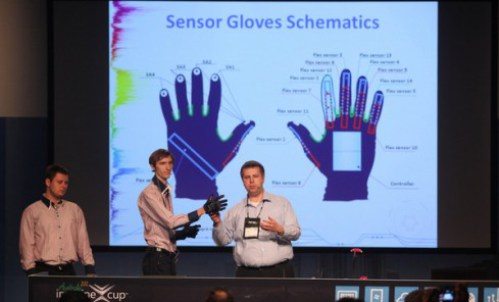
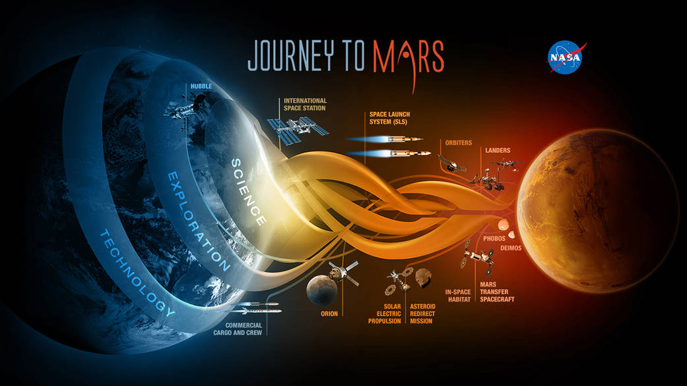
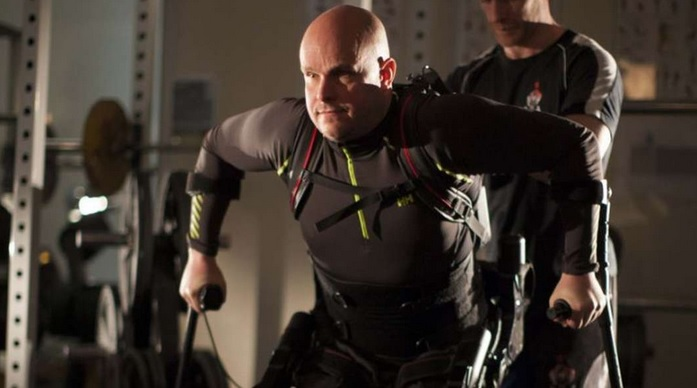

IT Trands
IT News
Говорящие перчатки
Студенты Компьютерной Академии ШАГ выиграли самый большой и престижный конкурс программистов — Microsoft Imagine Cup. Проект Enable Talk занял первое место в номинации конкурса — Software Design. Ребята получили бесценный опыт, уважение коллег, а также 25 тысяч долларов! Участие в конкурсе приняли 420 тысяч студентов из более чем 100 стран! Команда представила уникальный проект, который позволяет переводить язык жестов в голос. Разработанные студентами специальные перчатки оборудованы гироскопом, акселерометром, компасом, разнообразными датчиками для того, чтобы захватывать и обрабатывать движения рук человека, говорящего на языке жестов, и переводить их в человеческую речь.
LinkМарс рядом
НАСА предлагало всем желающим отправить свое имя на Марс в 2016 году. Заявки на участие принимались до 8 сентября текущего года. Имя участника будет записано в кремниевом микрочипе, который полетит к Марсу на борту "InSight". В декабре прошлого года имена 1,38 миллиона человек оправились в космос в микрочипе на борту первого полета космического корабля НАСА "Орион". Аппарат "InSight" будет запущен с авиабазы Ванденберг в марте 2016 года, планируется его прибытие на Марс в сентябре. Миссия будет посвящена исследованию глубоких недр красной планеты.
LinkЭкзоскелет
Команда ученых из Калифорнийского университета пытается помочь людям вернуть возможность сознательно управлять своими парализованными нижними конечностями с помощью специально разработанного экзоскелета. Используя неинвазивную (не требующую операций) систему стимуляции спинной нервной системы, ученым удалось помочь человеку со столь объемным заболеванием вновь сделать первые шаги. Основываясь на методах неинвазивной технологии, которая использовалась учеными из Калифорнийского университета для возвращении пятерым добровольцам возможности сознательного управления своими парализованными конечностями.
Link